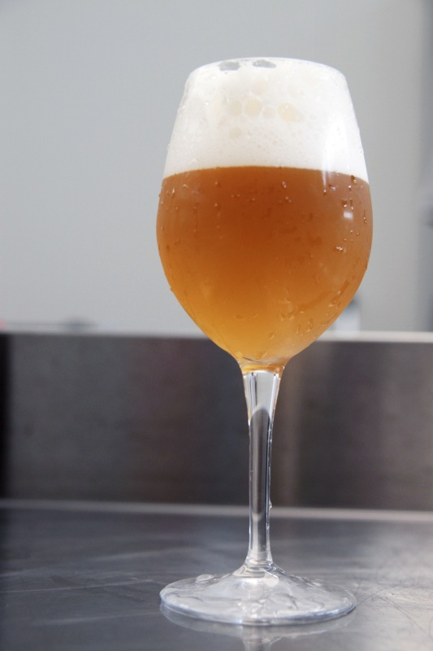
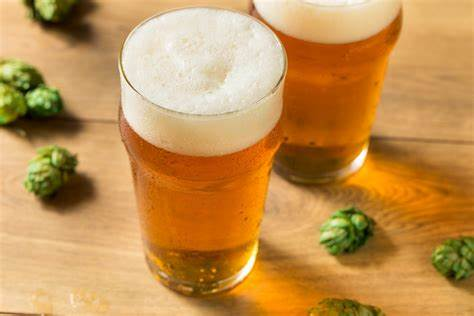
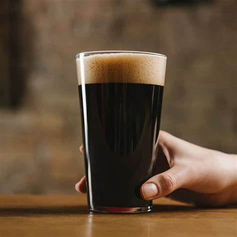

Recetas
Recetas para poder preparar tus cervezas artesanales. ¡Descubre las mejores recetas para hacer tus propias cervezas de manera fácil y divertida!

Cerveza Pale Ale
Ingredientes:
- 4 kg de Malta Pale
- 100 g de Lúpulo Cascade
- 1 paquete de Levadura
- 25 L de Agua
Instrucciones:
- Calentar el agua a 68°C.
- Agregar la malta y mantener la temperatura durante 60 minutos.
- Hervir y agregar el lúpulo.
- Enfriar y agregar la levadura.
- Fermentar durante 2 semanas.

Cerveza IPA
Ingredientes:
- 4.5 kg de Malta Pale
- 100 g de Lúpulo Citra
- 50 g de Lúpulo Simcoe
- 1 paquete de Levadura American Ale
- 25 L de Agua
Instrucciones:
- Calentar el agua a 70°C.
- Agregar la malta y mantener la temperatura durante 90 minutos.
- Hervir y agregar los lúpulos.
- Enfriar rápidamente y agregar la levadura.
- Fermentar durante 10-14 días a temperatura controlada.

Cerveza Stout
Ingredientes:
- 5 kg de Malta Pale
- 500 g de Malta Chocolate
- 100 g de Lúpulo East Kent Goldings
- 1 paquete de Levadura Ale
- 25 L de Agua
Instrucciones:
- Calentar el agua a 65°C.
- Agregar la malta y mantener la temperatura durante 70 minutos.
- Hervir y agregar el lúpulo.
- Enfriar y agregar la levadura.
- Fermentar durante 3 semanas para obtener un sabor más profundo.